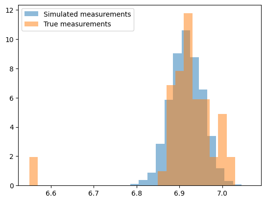
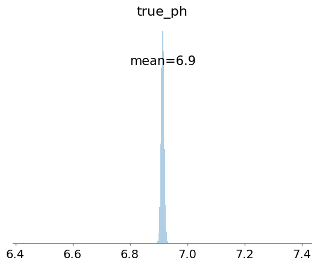

import numpy as np
import pandas as pd
from cmdstanpy import CmdStanModel
import matplotlib.pyplot as plt
import arviz as az
from stanio.json import process_dictionarySergi Muyo Abad
Student number: 222738
Introduction
In this project I will analyse a set of pH measurements. This measurements were taken in an experiment over the course of 3 days.
The main aim of the project is to check whether the measurements vary between the different sampling tiems or are instead what we would expect from a stable culture.
To do this I created a bayesian model thet can simulate more measurements, and calculate the expected real pH values of the sample by removing all the noise.
Code
First I import all the packages I will need.
Now I input some data for the simulations. This data comprises of:
num_samples: The number of pH measurments I have
measurements: The measured pH values
neutral: Neutral pH. We would expect the samples to have a pH similar to this
num_calibration: The number of calibration samples I have
cali_meas: The measured pH of the calibration samples
cali_real: The true pH of the calibration samples
num_samples = 52
measurements = [
6.55, 6.55, 6.96, 7.01,
6.92, 6.92, 6.94, 7.00,
6.91, 7.05, 6.98, 7,
6.91, 6.97, 6.92, 6.96,
7.00, 6.94, 6.88, 6.91,
6.89, 6.88, 6.92, 6.92,
6.92, 6.91, 6.90, 6.99,
6.96, 7.01, 6.9, 6.95,
6.89, 6.9, 6.89, 6.95,
6.88, 6.90, 6.93, 6.96,
6.94, 6.93, 6.94, 6.88,
6.88, 6.9, 6.86, 6.91,
6.88, 6.99, 6.92, 6.88
]
neutral = 7.0
num_calibration = 3
cali_meas = [3.98, 7.01, 9.01]
cali_real = [4.00, 7.00, 9.00]Model
Now I load the model and input the prior data.
model = CmdStanModel(stan_file="pH_v2.stan")
prior_data = process_dictionary({
"N": num_samples,
"measurements" : measurements,
"ave": neutral,
"N_calibration_measurement": num_calibration,
"calibration_measurements": cali_meas,
"calibration_ph": cali_real
}
)My model produces the measurement values with the following model:
measurement ~ N(pH + bias, curr_err + biological_noise)The parameters of the linear model are:
measurement: The measured pH value.
pH: The real pH value. For the samples it is assumed to be 7.0 (see variable “neutral”)
bias. the calibration error. This calibration error is calculated using the calibration measurements, assuming that those measurements come from a normal distribution centered at the true pH of the calibration media, with a standard deviation equal to the calibration noise.
curr_err: The pH meter accuracy. This is calculated from a normal distribution centered at 0.01 and with a standard deviation of 0.1
biological_noise: This parameter accounts for biological noise. It is calculated from a lognormal distribution centered at 0.05, with a standard deviation of 0.1.
print(model.code())functions {
vector standardise(vector v, real m, real s) {
return (v - m) / s;
}
real standardise(real v, real m, real s) {
return (v - m) / s;
}
vector unstandardise(vector u, real m, real s) {
return m + u * s;
}
real unstandardise(real u, real m, real s) {
return m + u * s;
}
}
data {
int<lower=1> N;
int<lower=1> N_calibration_measurement;
vector[N] measurements;
vector[N_calibration_measurement] calibration_measurements;
vector[N_calibration_measurement] calibration_ph;
real ave;
}
transformed data {
vector[N] meas_ls = standardise(log(measurements), mean(log(measurements)), sd(log(measurements)));
real ave_ls = standardise(log(ave), mean(log(measurements)), sd(log(measurements)));
}
parameters {
real true_ph_ls;
real<lower=0> biological_noise;
real bias;
real curr_err;
}
model {
curr_err ~ lognormal(log(0.01), 0.1);
biological_noise ~ lognormal(log(0.05), 0.1);
meas_ls ~ normal(true_ph_ls + bias, curr_err + biological_noise);
calibration_measurements ~ normal(calibration_ph + bias, curr_err);
}
generated quantities {
real true_ph = exp(unstandardise(true_ph_ls, mean(log(measurements)), sd(log(measurements))));
real yrep = exp(unstandardise(normal_rng(true_ph_ls + bias, curr_err + biological_noise), mean(log(measurements)), sd(log(measurements))));
}mcmc_res = model.sample(data=prior_data)15:44:12 - cmdstanpy - INFO - CmdStan start processing
chain 1 | | 00:00 Status
chain 1 |█████▉ | 00:00 Iteration: 1001 / 2000 [ 50%] (Sampling)
chain 1 |██████████| 00:00 Sampling completed
chain 2 |██████████| 00:00 Sampling completed
chain 3 |██████████| 00:00 Sampling completed
chain 4 |██████████| 00:00 Sampling completed
15:44:13 - cmdstanpy - INFO - CmdStan done processing.
15:44:13 - cmdstanpy - WARNING - Non-fatal error during sampling:
Exception: lognormal_lpdf: Random variable is -218.005, but must be nonnegative! (in 'pH_v2.stan', line 38, column 4 to column 41)
Exception: lognormal_lpdf: Random variable is -217.118, but must be nonnegative! (in 'pH_v2.stan', line 38, column 4 to column 41)
Exception: lognormal_lpdf: Random variable is -52.8586, but must be nonnegative! (in 'pH_v2.stan', line 38, column 4 to column 41)
Exception: lognormal_lpdf: Random variable is -12.5066, but must be nonnegative! (in 'pH_v2.stan', line 38, column 4 to column 41)
Exception: lognormal_lpdf: Random variable is -2.37701, but must be nonnegative! (in 'pH_v2.stan', line 38, column 4 to column 41)
Exception: lognormal_lpdf: Random variable is -12246, but must be nonnegative! (in 'pH_v2.stan', line 38, column 4 to column 41)
Exception: lognormal_lpdf: Random variable is -235.882, but must be nonnegative! (in 'pH_v2.stan', line 38, column 4 to column 41)
Exception: lognormal_lpdf: Random variable is -0.910924, but must be nonnegative! (in 'pH_v2.stan', line 38, column 4 to column 41)
Exception: lognormal_lpdf: Random variable is -0.0711619, but must be nonnegative! (in 'pH_v2.stan', line 38, column 4 to column 41)
Exception: lognormal_lpdf: Random variable is -0.00589079, but must be nonnegative! (in 'pH_v2.stan', line 38, column 4 to column 41)
Exception: lognormal_lpdf: Random variable is -0.00174194, but must be nonnegative! (in 'pH_v2.stan', line 38, column 4 to column 41)
Exception: lognormal_lpdf: Random variable is -0.00778868, but must be nonnegative! (in 'pH_v2.stan', line 38, column 4 to column 41)
Exception: lognormal_lpdf: Random variable is -0.850364, but must be nonnegative! (in 'pH_v2.stan', line 38, column 4 to column 41)
Exception: lognormal_lpdf: Random variable is -0.00229534, but must be nonnegative! (in 'pH_v2.stan', line 38, column 4 to column 41)
Exception: lognormal_lpdf: Random variable is -0.000770245, but must be nonnegative! (in 'pH_v2.stan', line 38, column 4 to column 41)
Exception: lognormal_lpdf: Random variable is -0.0514801, but must be nonnegative! (in 'pH_v2.stan', line 38, column 4 to column 41)
Exception: lognormal_lpdf: Random variable is -0.0146514, but must be nonnegative! (in 'pH_v2.stan', line 38, column 4 to column 41)
Exception: lognormal_lpdf: Random variable is -0.00667429, but must be nonnegative! (in 'pH_v2.stan', line 38, column 4 to column 41)
Exception: lognormal_lpdf: Random variable is -0.00046715, but must be nonnegative! (in 'pH_v2.stan', line 38, column 4 to column 41)
Exception: lognormal_lpdf: Random variable is -0.0131069, but must be nonnegative! (in 'pH_v2.stan', line 38, column 4 to column 41)
Exception: lognormal_lpdf: Random variable is -0.00535211, but must be nonnegative! (in 'pH_v2.stan', line 38, column 4 to column 41)
Exception: lognormal_lpdf: Random variable is -0.00414742, but must be nonnegative! (in 'pH_v2.stan', line 38, column 4 to column 41)
Exception: lognormal_lpdf: Random variable is -0.0201754, but must be nonnegative! (in 'pH_v2.stan', line 38, column 4 to column 41)
Exception: lognormal_lpdf: Random variable is -0.00362661, but must be nonnegative! (in 'pH_v2.stan', line 38, column 4 to column 41)
Exception: lognormal_lpdf: Random variable is -0.0557619, but must be nonnegative! (in 'pH_v2.stan', line 38, column 4 to column 41)
Exception: lognormal_lpdf: Random variable is -0.00441846, but must be nonnegative! (in 'pH_v2.stan', line 38, column 4 to column 41)
Exception: lognormal_lpdf: Random variable is -0.000175035, but must be nonnegative! (in 'pH_v2.stan', line 38, column 4 to column 41)
Exception: lognormal_lpdf: Random variable is -0.00531074, but must be nonnegative! (in 'pH_v2.stan', line 38, column 4 to column 41)
Exception: lognormal_lpdf: Random variable is -0.0217511, but must be nonnegative! (in 'pH_v2.stan', line 38, column 4 to column 41)
Exception: lognormal_lpdf: Random variable is -0.305956, but must be nonnegative! (in 'pH_v2.stan', line 38, column 4 to column 41)
Exception: lognormal_lpdf: Random variable is -1.88684, but must be nonnegative! (in 'pH_v2.stan', line 38, column 4 to column 41)
Exception: lognormal_lpdf: Random variable is -0.332894, but must be nonnegative! (in 'pH_v2.stan', line 38, column 4 to column 41)
Exception: lognormal_lpdf: Random variable is -51.3624, but must be nonnegative! (in 'pH_v2.stan', line 38, column 4 to column 41)
Exception: lognormal_lpdf: Random variable is -53.7112, but must be nonnegative! (in 'pH_v2.stan', line 38, column 4 to column 41)
Exception: lognormal_lpdf: Random variable is -13.1436, but must be nonnegative! (in 'pH_v2.stan', line 38, column 4 to column 41)
Exception: lognormal_lpdf: Random variable is -3.03029, but must be nonnegative! (in 'pH_v2.stan', line 38, column 4 to column 41)
Exception: lognormal_lpdf: Random variable is -0.60899, but must be nonnegative! (in 'pH_v2.stan', line 38, column 4 to column 41)
Exception: lognormal_lpdf: Random variable is -5329.92, but must be nonnegative! (in 'pH_v2.stan', line 38, column 4 to column 41)
Exception: lognormal_lpdf: Random variable is -109.436, but must be nonnegative! (in 'pH_v2.stan', line 38, column 4 to column 41)
Exception: lognormal_lpdf: Random variable is -0.634672, but must be nonnegative! (in 'pH_v2.stan', line 38, column 4 to column 41)
Exception: lognormal_lpdf: Random variable is -0.00653052, but must be nonnegative! (in 'pH_v2.stan', line 38, column 4 to column 41)
Exception: lognormal_lpdf: Random variable is -0.0593028, but must be nonnegative! (in 'pH_v2.stan', line 38, column 4 to column 41)
Exception: lognormal_lpdf: Random variable is -0.00116604, but must be nonnegative! (in 'pH_v2.stan', line 38, column 4 to column 41)
Exception: lognormal_lpdf: Random variable is -0.00575908, but must be nonnegative! (in 'pH_v2.stan', line 38, column 4 to column 41)
Exception: lognormal_lpdf: Random variable is -0.000958854, but must be nonnegative! (in 'pH_v2.stan', line 38, column 4 to column 41)
Exception: lognormal_lpdf: Random variable is -0.000825148, but must be nonnegative! (in 'pH_v2.stan', line 38, column 4 to column 41)
Exception: lognormal_lpdf: Random variable is -0.000586856, but must be nonnegative! (in 'pH_v2.stan', line 38, column 4 to column 41)
Exception: lognormal_lpdf: Random variable is -0.0384168, but must be nonnegative! (in 'pH_v2.stan', line 38, column 4 to column 41)
Exception: lognormal_lpdf: Random variable is -0.0071509, but must be nonnegative! (in 'pH_v2.stan', line 38, column 4 to column 41)
Exception: lognormal_lpdf: Random variable is -1.79842, but must be nonnegative! (in 'pH_v2.stan', line 38, column 4 to column 41)
Exception: lognormal_lpdf: Random variable is -1.16604, but must be nonnegative! (in 'pH_v2.stan', line 38, column 4 to column 41)
Exception: lognormal_lpdf: Random variable is -1.94782, but must be nonnegative! (in 'pH_v2.stan', line 38, column 4 to column 41)
Exception: lognormal_lpdf: Random variable is -1.06909, but must be nonnegative! (in 'pH_v2.stan', line 38, column 4 to column 41)
Exception: lognormal_lpdf: Random variable is -161.322, but must be nonnegative! (in 'pH_v2.stan', line 38, column 4 to column 41)
Exception: lognormal_lpdf: Random variable is -161.94, but must be nonnegative! (in 'pH_v2.stan', line 38, column 4 to column 41)
Exception: lognormal_lpdf: Random variable is -38.9269, but must be nonnegative! (in 'pH_v2.stan', line 38, column 4 to column 41)
Exception: lognormal_lpdf: Random variable is -8.51107, but must be nonnegative! (in 'pH_v2.stan', line 38, column 4 to column 41)
Exception: lognormal_lpdf: Random variable is -0.759784, but must be nonnegative! (in 'pH_v2.stan', line 38, column 4 to column 41)
Exception: lognormal_lpdf: Random variable is -0.0568817, but must be nonnegative! (in 'pH_v2.stan', line 38, column 4 to column 41)
Exception: lognormal_lpdf: Random variable is -1943.13, but must be nonnegative! (in 'pH_v2.stan', line 38, column 4 to column 41)
Exception: lognormal_lpdf: Random variable is -21.6831, but must be nonnegative! (in 'pH_v2.stan', line 38, column 4 to column 41)
Exception: lognormal_lpdf: Random variable is -0.271311, but must be nonnegative! (in 'pH_v2.stan', line 38, column 4 to column 41)
Exception: lognormal_lpdf: Random variable is -0.00743674, but must be nonnegative! (in 'pH_v2.stan', line 38, column 4 to column 41)
Exception: lognormal_lpdf: Random variable is -0.00487663, but must be nonnegative! (in 'pH_v2.stan', line 38, column 4 to column 41)
Exception: lognormal_lpdf: Random variable is -0.000415613, but must be nonnegative! (in 'pH_v2.stan', line 38, column 4 to column 41)
Exception: lognormal_lpdf: Random variable is -0.00697365, but must be nonnegative! (in 'pH_v2.stan', line 38, column 4 to column 41)
Exception: lognormal_lpdf: Random variable is -0.00923865, but must be nonnegative! (in 'pH_v2.stan', line 38, column 4 to column 41)
Exception: lognormal_lpdf: Random variable is -0.00367279, but must be nonnegative! (in 'pH_v2.stan', line 38, column 4 to column 41)
Exception: lognormal_lpdf: Random variable is -0.0162794, but must be nonnegative! (in 'pH_v2.stan', line 38, column 4 to column 41)
Exception: lognormal_lpdf: Random variable is -0.0119931, but must be nonnegative! (in 'pH_v2.stan', line 38, column 4 to column 41)
Exception: lognormal_lpdf: Random variable is -0.187871, but must be nonnegative! (in 'pH_v2.stan', line 38, column 4 to column 41)
Exception: lognormal_lpdf: Random variable is -0.0083788, but must be nonnegative! (in 'pH_v2.stan', line 38, column 4 to column 41)
Exception: lognormal_lpdf: Random variable is -0.00449882, but must be nonnegative! (in 'pH_v2.stan', line 38, column 4 to column 41)
Exception: lognormal_lpdf: Random variable is -0.00147511, but must be nonnegative! (in 'pH_v2.stan', line 38, column 4 to column 41)
Exception: lognormal_lpdf: Random variable is -0.00842393, but must be nonnegative! (in 'pH_v2.stan', line 38, column 4 to column 41)
Consider re-running with show_console=True if the above output is unclear! print(mcmc_res.summary())
print(mcmc_res.diagnose()) Mean MCSE StdDev 5% 50% \
lp__ -308.712000 0.037273 1.459580 -311.477000 -308.365000
true_ph_ls 0.000974 0.001199 0.061391 -0.099643 0.001999
biological_noise 0.424791 0.000326 0.016986 0.397680 0.424178
bias -0.000149 0.000119 0.006483 -0.011099 -0.000371
curr_err 0.010974 0.000016 0.001095 0.009265 0.010931
true_ph 6.915710 0.000104 0.005335 6.906970 6.915800
yrep 6.916680 0.000600 0.037635 6.855270 6.916930
95% N_Eff N_Eff/s R_hat
lp__ -307.051000 1533.47 7302.26 1.002350
true_ph_ls 0.104362 2620.21 12477.20 0.999730
biological_noise 0.453722 2711.89 12913.80 1.000610
bias 0.010325 2947.69 14036.60 1.001250
curr_err 0.012834 4477.12 21319.60 0.999847
true_ph 6.924700 2619.97 12476.10 0.999730
yrep 6.978100 3932.96 18728.40 0.999477
Processing csv files: /tmp/tmpr1kac7ib/pH_v2x0rrh8qj/pH_v2-20240630154412_1.csv, /tmp/tmpr1kac7ib/pH_v2x0rrh8qj/pH_v2-20240630154412_2.csv, /tmp/tmpr1kac7ib/pH_v2x0rrh8qj/pH_v2-20240630154412_3.csv, /tmp/tmpr1kac7ib/pH_v2x0rrh8qj/pH_v2-20240630154412_4.csv
Checking sampler transitions treedepth.
Treedepth satisfactory for all transitions.
Checking sampler transitions for divergences.
No divergent transitions found.
Checking E-BFMI - sampler transitions HMC potential energy.
E-BFMI satisfactory.
Effective sample size satisfactory.
Split R-hat values satisfactory all parameters.
Processing complete, no problems detected.
The disgnostics for the model look good. The R_hat is what we would expect, and we did not have nay divergent transitions.
Now I will load the data and format it for plotting.
idata = az.from_cmdstanpy(mcmc_res)
idata.to_json("my_arviz_idata.json")
true_vals = idata.posterior.true_ph.values.flatten()
sim_vals = idata.posterior.yrep.values.flatten()Plots
w = 0.02
plt.hist(sim_vals, label="Simulated measurements", density=True, bins=np.arange(min(sim_vals), max(sim_vals) + w, w), alpha=0.5)
plt.hist(measurements, label="True measurements", density=True, bins=np.arange(min(measurements), max(measurements) + w, w), alpha=0.5)
plt.legend()
In this previous plot we see the simulated measurements and the measurements we took in the experiment.
Both sets of measurements look quite similar. There are 2 samples from our true measurements that are lower than we would expect, and we can see a small bump in density around pH 7.0 that we do not see in the simulated measurements, but overall we can conclude that the true measurements do not deviate from the expected data.
Finally, I will plot the true pH values predicted by the model.
az.plot_posterior(idata.posterior.true_ph, kind="hist", hdi_prob="hide")
Our model indicates that the true values of our measurements are all very similar, with a constant pH at 6.9.